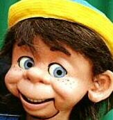

Reader Update
4/2/2011
{kind=link}

From Brian Zimmerman: I just wanted to tell you how much I love the dummy that my late grandmother purchased from you in 1990 to encourage my career as a professional clown. I have used him all over the world and repainted him to be a clown for a period of time. Now he's back to his normal self. I stopped doing professional clowning in 2002, and now create children's television. direct audio for animated shows, and write children's books http://www.brianzimmerman.biz/ . But "Dexter" is doing well and he's living with me in Asia (Kuala Lumpur, Malaysia) where I live now. Thank you for your wonderful figures!
* * * * * *
From Mr. D: You have one of those wonderful "Clipper" figures built by Lovik - of all the characters we sold at Maher Studios, he is still one of my favorites. While I never get far from my Colorado home and shop, the figures we sold, and those I continue to build, travel far and wide. It is exciting and rewarding to hear of their adventures. Thank you for writing!